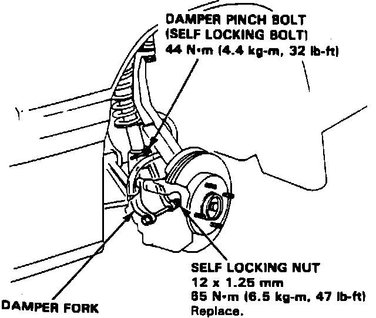
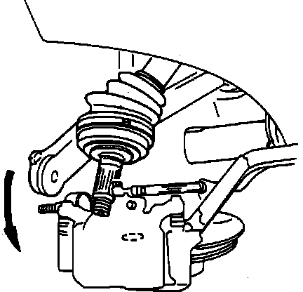
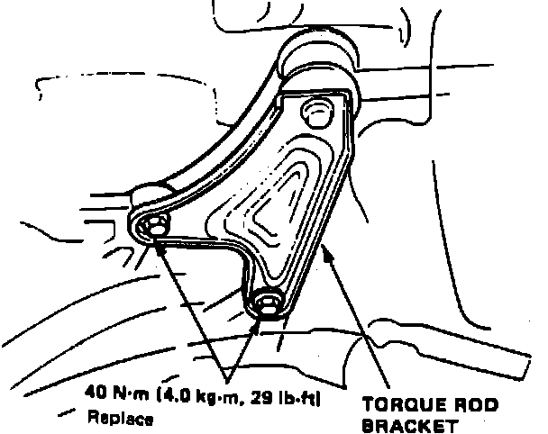
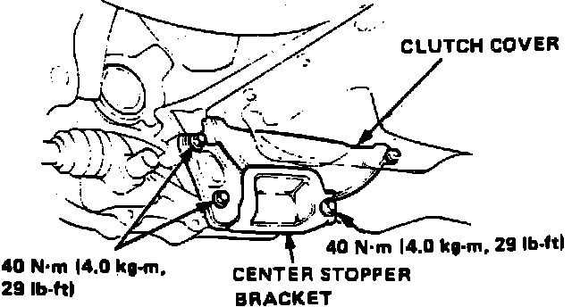
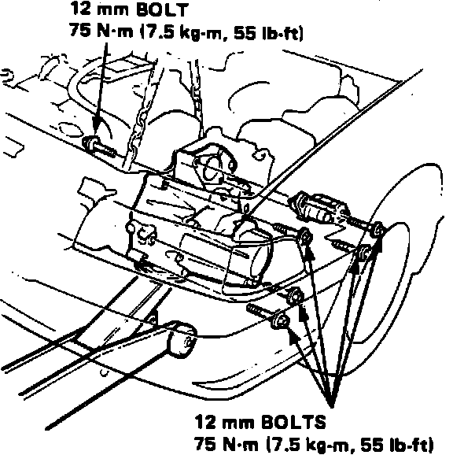

Manual Transmission/Transaxle: Service and Repair
1. Disable coded theft protection system as described under MAINTENANCE PROCEDURES/CODED THEFT PROTECTION DISARMING.2. Disarm airbag system as described under MAINTENANCE PROCEDURES/AIRBAG SYSTEM DISARMING.
3. Disconnect all electrical connectors from starter and transaxle.
4. Release engine sub-wire harness from clamp on transaxle housing.
5. Loosen bolts at battery base and intake hose band.
6. Remove air cleaner assembly with air intake hose.
7. Remove clutch slave cylinder attaching bolts, then clutch slave cylinder with clutch hose and pushrod.
8. Remove clutch damper assembly attaching bolts, then clutch damper assembly from transaxle hanger bracket. Do not operate clutch pedal once slave cylinder has been removed.
9. Remove power steering speed sensor with sensor hose.
10. Drain transaxle oil, then reinstall drain plug.
11. Raise and support vehicle, then remove front wheels.
12. Raise locking tab on spindle nut, then remove nut.
Fig. 8 Damper Fork Removal:

Fig. 9 Removing Driveshaft Outboard Joint:

Fig. 10 Torque Rod Bracket Bolt Removal:

Fig. 11 Clutch Cover & Center Stopper Bracket Removal:

Fig. 12 Transaxle Removal:

13. Remove damper fork bolt, damper pinch bolt, then damper fork, Fig. 8.
14. Remove knuckle to lower arm castle nut, then separate lower arm from knuckle using a suitable puller.
15. Pull knuckle outward, then remove driveshaft outboard joint from knuckle using a suitable plastic mallet, Fig. 9.
16. Using a suitable screwdriver, pry driveshaft assembly to force set ring at driveshaft end past the groove.
17. Pull inboard joint outward, then remove driveshaft and CV joint out from differential case as an assembly. Repeat steps 11 through 16 for opposite driveshaft and CV joint removal.
18. Remove intermediate shaft attaching bolts, then intermediate shaft.
19. Remove shift rod and shift extension.
20. Remove two bolts attaching the torque rod bracket to clutch case, Fig. 10.
21. Position a suitable jack securely beneath transaxle.
22. Remove subframe center beam, then attach engine hanger set plates or equivalent to support engine.
23. Remove center stopper bracket from transaxle, then clutch cover, Fig. 11.
24. Remove two rear engine mounting bolts from transaxle, then the two front engine mounting bolts from transaxle housing.
25. Remove starter attaching bolts, then starter.
26. Remove remaining transaxle mounting bolts, then pull transaxle away from engine to clear dowel pins and lower transaxle, Fig. 12.
27. Reverse procedure to install.